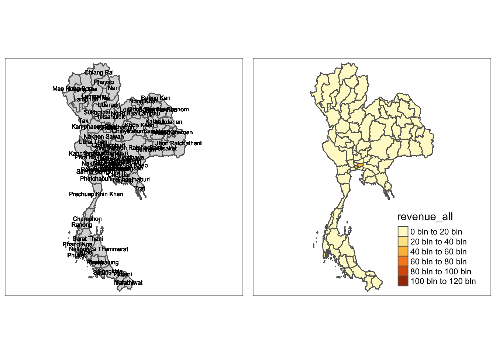
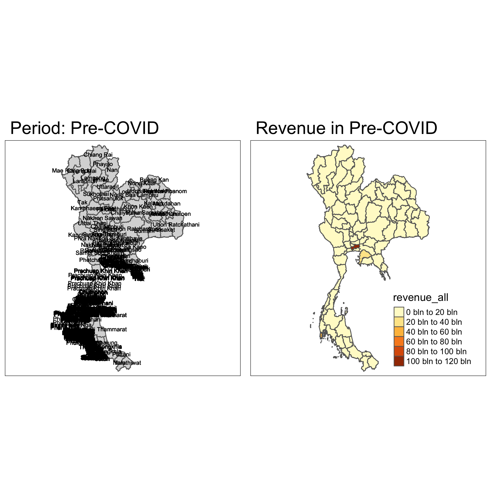
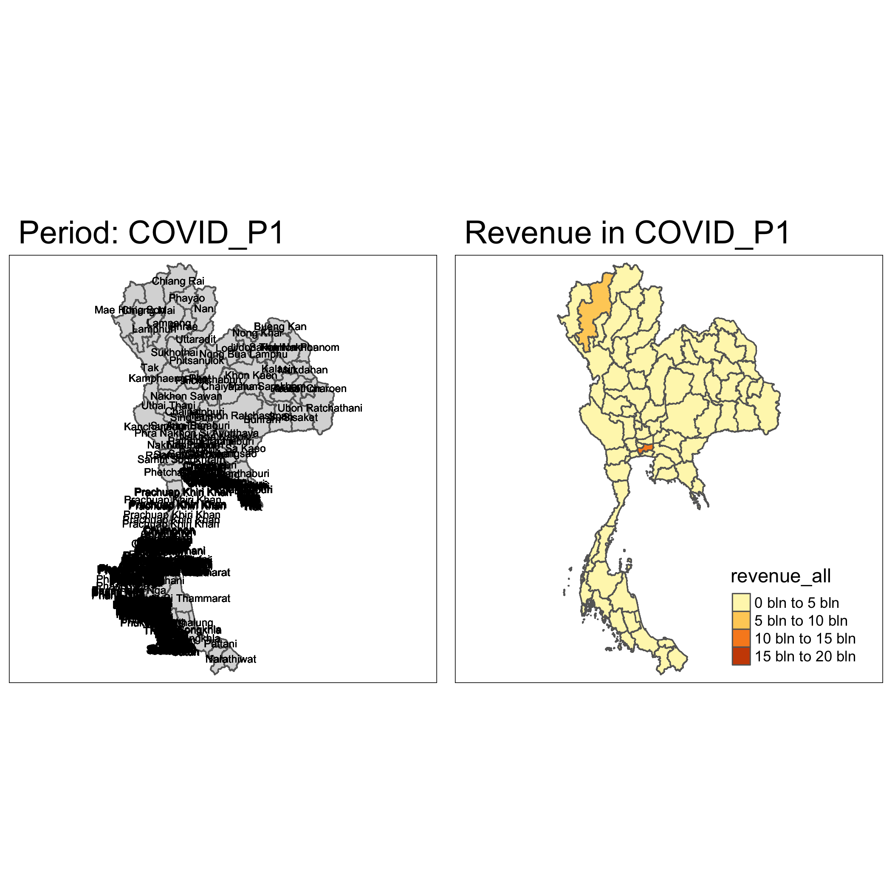
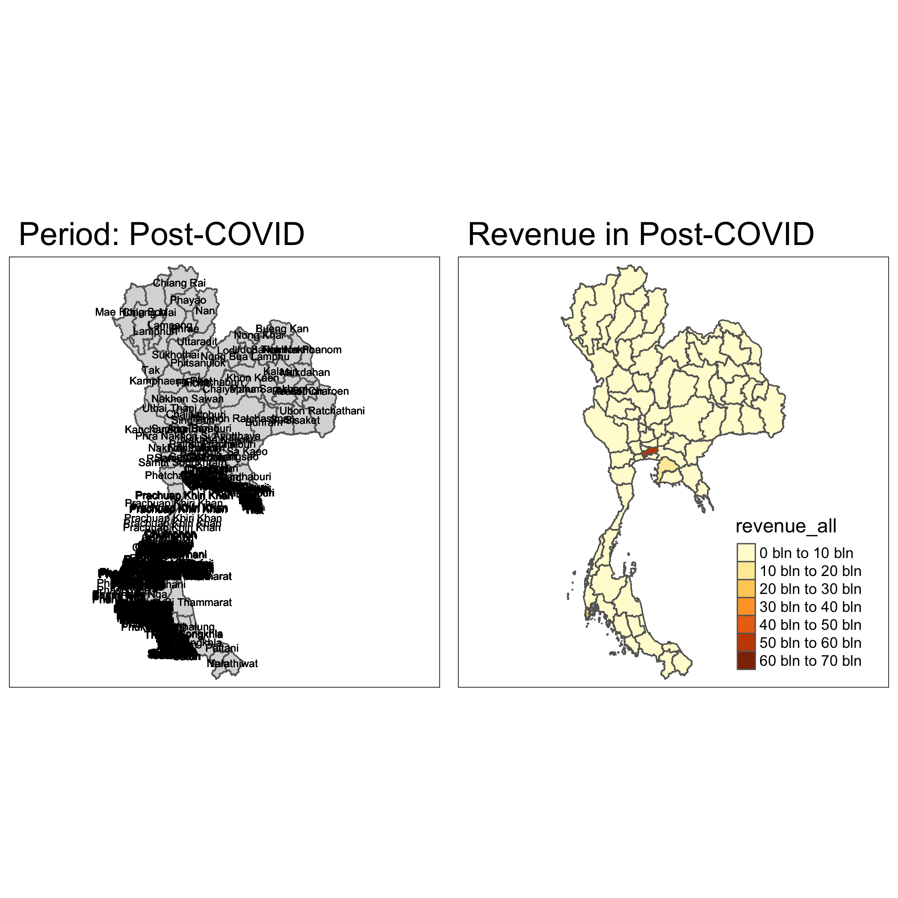
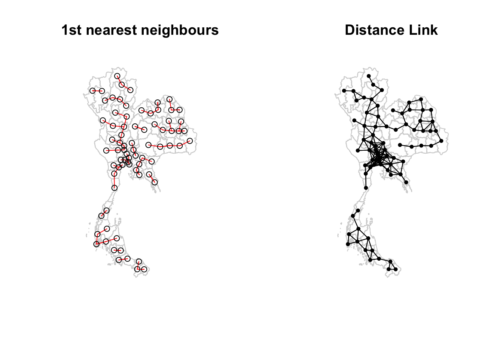
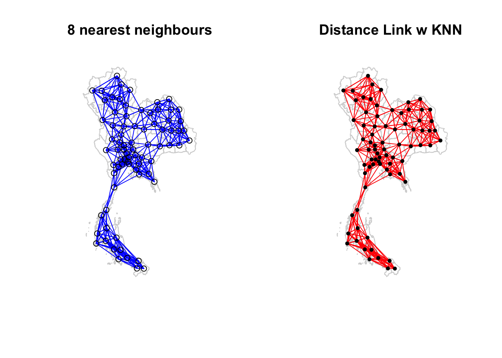

Code Chunk
pacman::p_load(tidyverse, sf, spatstat, ggplot2, ggmap, tmap, dplyr, lubridate, raster, gtsummary, tidyr, spdep, knitr)Tourism is one of Thailand’s largest industries, accounting for some 20% of the gross domestic product (GDP). In 2019, Thailand earned 90 billion US$ from domestic and international tourism, but the COVID-19 pandemic caused revenues to crash to 24 billion US$ in 2020.
Figure below shows the total revenue receipt from tourism sector from January 2019 until Feb 2023. The figure reveals that the revenue from tourism industry have been recovered gradually since September 2021.
To discover:
if the key indicators of tourism economy of Thailand are independent from space and space and time.
If the tourism economy is indeed spatial and spatio-temporal dependent, then, you would like to detect where are the clusters and outliers, and the emerging hot spot/cold spot areas.
pacman::p_load(tidyverse, sf, spatstat, ggplot2, ggmap, tmap, dplyr, lubridate, raster, gtsummary, tidyr, spdep, knitr)| Packages | Function |
|---|---|
| sf | To import, manage, and hande geospatial data |
| tidyverse | For non-spatial data wrangling |
| sfdep | To compute spatial weights, global and local spatial autocorrelation statistics |
| spatstat | For analysing spatial points |
| ggplot2 | For data divisualisation |
| ggmap | Retrieve raster map tiles from online mapping services |
| tmap | Creating thematic maps |
| lubridate | For robust date-time usage |
| leaflet | For interactive maps |
| knitr | For dynamic report generation |
In this section, st_read() of sf package is used to import ‘tha_adm_rtsd_itos_20210121_shp’ dataset into R enironment. st_transform() is used to transform the coordinate reference system (CRS) as we are assigning the boundary data for Thailand and the CRS is EPSG 32647.
thaiboundary <- st_read(dsn = "data/geospatial/tha_adm_rtsd_itos_20210121_shp/",
layer = "tha_admbnda_adm1_rtsd_20220121") %>%
st_transform(crs = 32647)Reading layer `tha_admbnda_adm1_rtsd_20220121' from data source
`/Users/joshuatingsiyuan14/Desktop/isaiahting/ISSS626_GAA/TakeHomeExercise/TakeHome2/data/geospatial/tha_adm_rtsd_itos_20210121_shp'
using driver `ESRI Shapefile'
Simple feature collection with 77 features and 16 fields
Geometry type: MULTIPOLYGON
Dimension: XY
Bounding box: xmin: 97.34336 ymin: 5.613038 xmax: 105.637 ymax: 20.46507
Geodetic CRS: WGS 84In ensuring the right assignment of the coordinate reference system to the data, st_crs() is used.
st_crs(thaiboundary)Coordinate Reference System:
User input: EPSG:32647
wkt:
PROJCRS["WGS 84 / UTM zone 47N",
BASEGEOGCRS["WGS 84",
ENSEMBLE["World Geodetic System 1984 ensemble",
MEMBER["World Geodetic System 1984 (Transit)"],
MEMBER["World Geodetic System 1984 (G730)"],
MEMBER["World Geodetic System 1984 (G873)"],
MEMBER["World Geodetic System 1984 (G1150)"],
MEMBER["World Geodetic System 1984 (G1674)"],
MEMBER["World Geodetic System 1984 (G1762)"],
MEMBER["World Geodetic System 1984 (G2139)"],
ELLIPSOID["WGS 84",6378137,298.257223563,
LENGTHUNIT["metre",1]],
ENSEMBLEACCURACY[2.0]],
PRIMEM["Greenwich",0,
ANGLEUNIT["degree",0.0174532925199433]],
ID["EPSG",4326]],
CONVERSION["UTM zone 47N",
METHOD["Transverse Mercator",
ID["EPSG",9807]],
PARAMETER["Latitude of natural origin",0,
ANGLEUNIT["degree",0.0174532925199433],
ID["EPSG",8801]],
PARAMETER["Longitude of natural origin",99,
ANGLEUNIT["degree",0.0174532925199433],
ID["EPSG",8802]],
PARAMETER["Scale factor at natural origin",0.9996,
SCALEUNIT["unity",1],
ID["EPSG",8805]],
PARAMETER["False easting",500000,
LENGTHUNIT["metre",1],
ID["EPSG",8806]],
PARAMETER["False northing",0,
LENGTHUNIT["metre",1],
ID["EPSG",8807]]],
CS[Cartesian,2],
AXIS["(E)",east,
ORDER[1],
LENGTHUNIT["metre",1]],
AXIS["(N)",north,
ORDER[2],
LENGTHUNIT["metre",1]],
USAGE[
SCOPE["Engineering survey, topographic mapping."],
AREA["Between 96°E and 102°E, northern hemisphere between equator and 84°N, onshore and offshore. China. Indonesia. Laos. Malaysia - West Malaysia. Mongolia. Myanmar (Burma). Russian Federation. Thailand."],
BBOX[0,96,84,102]],
ID["EPSG",32647]]glimpse(thaiboundary)Rows: 77
Columns: 17
$ Shape_Leng <dbl> 2.417227, 1.695100, 1.251111, 1.884945, 3.041716, 1.739908,…
$ Shape_Area <dbl> 0.13133873, 0.07926199, 0.05323766, 0.12698345, 0.21393797,…
$ ADM1_EN <chr> "Bangkok", "Samut Prakan", "Nonthaburi", "Pathum Thani", "P…
$ ADM1_TH <chr> "กรุงเทพมหานคร", "สมุทรปราการ", "นนทบุรี", "ปทุมธานี", "พระนครศรีอ…
$ ADM1_PCODE <chr> "TH10", "TH11", "TH12", "TH13", "TH14", "TH15", "TH16", "TH…
$ ADM1_REF <chr> NA, NA, NA, NA, NA, NA, NA, NA, NA, NA, NA, NA, NA, NA, NA,…
$ ADM1ALT1EN <chr> NA, NA, NA, NA, NA, NA, NA, NA, NA, NA, NA, NA, NA, NA, NA,…
$ ADM1ALT2EN <chr> NA, NA, NA, NA, NA, NA, NA, NA, NA, NA, NA, NA, NA, NA, NA,…
$ ADM1ALT1TH <chr> NA, NA, NA, NA, NA, NA, NA, NA, NA, NA, NA, NA, NA, NA, NA,…
$ ADM1ALT2TH <chr> NA, NA, NA, NA, NA, NA, NA, NA, NA, NA, NA, NA, NA, NA, NA,…
$ ADM0_EN <chr> "Thailand", "Thailand", "Thailand", "Thailand", "Thailand",…
$ ADM0_TH <chr> "ประเทศไทย", "ประเทศไทย", "ประเทศไทย", "ประเทศไทย", "ประเทศ…
$ ADM0_PCODE <chr> "TH", "TH", "TH", "TH", "TH", "TH", "TH", "TH", "TH", "TH",…
$ date <date> 2019-02-18, 2019-02-18, 2019-02-18, 2019-02-18, 2019-02-18…
$ validOn <date> 2022-01-22, 2022-01-22, 2022-01-22, 2022-01-22, 2022-01-22…
$ validTo <date> NA, NA, NA, NA, NA, NA, NA, NA, NA, NA, NA, NA, NA, NA, NA…
$ geometry <MULTIPOLYGON [m]> MULTIPOLYGON (((674339.8 15..., MULTIPOLYGON (…After importing the dataset, we will plot the Thailand map using tmap.
tmap_mode("plot")
tm_shape(thaiboundary) +
tm_fill(col = "white") +
tm_borders(col = "black", lwd = 0.3, alpha = 0.6) +
tm_layout(
main.title = "Thailand Administrative Boundary",
main.title.size = 0.8,
main.title.color = "blue",
main.title.position = "center",
legend.show = TRUE,
frame = FALSE
)
revenue <- read_csv("data/aspatial/thailand_domestic_tourism_2019_2023_ver2.csv")The data is then transposed. The “date” column is also converted to POSIXct for ease of manipulation at the later stage.
revenue_transposed <- revenue %>%
mutate(date = as.POSIXct(date)) %>%
dplyr::select(-province_thai, -region_thai) %>%
pivot_wider(
names_from = variable, # Use unique values in 'events' as column names
values_from = value, # Fill new columns with values from 'value'
values_fill = list(value = 0) # Fill NA with 0
)[1] "date" "province_thai" "province_eng" "region_thai"
[5] "region_eng" "variable" "value" In rooting the understanding of the COVID-19 situation in Thailand, it is important to read the Wiki page specifically under the section of Government Response.
The time period of pre-COVID19 was set from 1st January 2019 to 2nd April 2020 as quoted from Wiki “On 3 April, the Civil Aviation Authority of Thailand ordered that there would be a ban on all passengers flights landing in Thailand from the morning of 4 April to the evening of the 6 April..” under the section of Government Response - International Travel Restrictions. Following the closure of Thailand borders on 4th April 2020, the first series of border opening was 1st July 2021 as evidenced by”On 15 July 2021, it became possible for vaccinated holidaymakers from overseas to visit three islands in the Surat Thani province; Koh Samui, Koh Tao and Koh Phangan. The decision follows the reopening of Phuket, Thailand’s largest island, on Thursday, July 1”. Thus, the timeframe of COVID19 was set from 4th April 2020 - 30th June 2021. The Government of Thailand only lifted the restrictions such as PCR testing for fully-vaccinated travellers on 1st May 2022 as seen “Starting 1 May 2022, fully-vaccinated travellers will NOT require RT-PCR on arrival but still need Thailand Pass. ATK is voluntary only.” Thus the 2nd part of COVID19 pandemic in Thailand is 1st July 2021 to 30th April 2022. 1st May 2022 marks the reopening of the country borders hence, for this post COVID19 data is set from 1st May 2022 to 31st December 2023.
revenue_transposed <- revenue_transposed %>%
mutate(
Period = case_when(
date >= as.Date("2019-01-01") & date <= as.Date("2020-04-03") ~ "Pre-COVID",
date >= as.Date("2020-04-04") & date <= as.Date("2021-06-30") ~ "COVID_P1",
date >= as.Date("2021-07-01") & date <= as.Date("2022-04-30") ~ "COVID_P2",
date >= as.Date("2022-05-01") & date <= as.Date("2023-12-31") ~ "Post-COVID",
TRUE ~ NA_character_ # For any dates outside these ranges
)
)write_rds(revenue_transposed, "data/rds/revenue_transposed.rds")revenue_transposed = read_rds("data/rds/revenue_transposed.rds")Prior combining the SF & DF, we would want to compare the unique values (namely the provinces) in the columns "ADM1_EN" from the thaiboundary spatial data frame and "province_eng" from the revenue_transposed data frame. The unique() function helps to identify any differences between the two columns.
# Get unique values from both columns
unique_thaiboundary <- unique(thaiboundary$ADM1_EN)
unique_revenue <- unique(revenue_transposed$province_eng)
# Find differences
diff_thaiboundary <- setdiff(unique_thaiboundary, unique_revenue) # In thaiboundary but not in revenue
diff_revenue <- setdiff(unique_revenue, unique_thaiboundary) # In revenue but not in thaiboundary
# Create a data frame to show differences
difference_table <- data.frame(
thaiboundary_only = diff_thaiboundary,
revenue_only = diff_revenue
)
# Print the differences
print(difference_table) thaiboundary_only revenue_only
1 Lop Buri Lopburi
2 Chai Nat Chainat
3 Chon Buri Chonburi
4 Prachin Buri Prachinburi
5 Buri Ram Phang Nga
6 Si Sa Ket Buriram
7 Nong Bua Lam Phu Sisaket
8 Phangnga Nong Bua LamphuNoticeably, we are able to witness the differences between both columns in the above output, this may result in missing values when combining both dataframes which is critical to our analysis. The differences are mainly due to the presence of white spaces.
Henceforth, in the below code, we update the values in the "ADM1_EN" column of the thaiboundary spatial data frame by creating a mapping of the old values to the new values and then use the dplyr package to perform the replacement.
# Create a data frame for the mapping
mapping <- data.frame(
old_value = c("Lop Buri", "Chai Nat", "Chon Buri", "Prachin Buri", "Buri Ram",
"Si Sa Ket", "Nong Bua Lam Phu", "Phangnga"),
new_value = c("Lopburi", "Chainat", "Chonburi", "Prachinburi", "Buriram",
"Sisaket", "Nong Bua Lamphu", "Phang Nga"),
stringsAsFactors = FALSE
)
# Create a named vector for recoding
recode_vector <- setNames(mapping$new_value, mapping$old_value)
# Update the ADM1_EN column using recode_vector
thaiboundary <- thaiboundary %>%
mutate(ADM1_EN = recode(ADM1_EN, !!!recode_vector))Thereafter, we perform a check again if there are still differences between columns "ADM1_EN" from the thaiboundary spatial data frame and "province_eng" from the revenue data frame. The results returned none which is reassuring to witness.
# Get unique values from each column
unique_adm1_en <- unique(thaiboundary$ADM1_EN)
unique_province_eng <- unique(revenue$province_eng)
# Compare unique values
differences_adm1_en <- setdiff(unique_adm1_en, unique_province_eng)
differences_province_eng <- setdiff(unique_province_eng, unique_adm1_en)
# Create a data frame to show differences side by side
comparison_table_check <- tibble(
ADM1_EN_Not_In_Province = differences_adm1_en,
Province_Eng_Not_In_ADM1 = differences_province_eng
)
# Display the comparison table
print(comparison_table_check)# A tibble: 0 × 2
# ℹ 2 variables: ADM1_EN_Not_In_Province <chr>, Province_Eng_Not_In_ADM1 <chr>thaiboundary <- thaiboundary %>%
rename(Province = ADM1_EN)revenue_transposed <- revenue_transposed %>%
rename(Province = province_eng)Unwanted columns also then removed for ease of wrangling.
combined <- thaiboundary %>%
left_join(revenue_transposed, by = "Province")
combined <- combined %>%
dplyr::select(-ADM1_TH, -ADM1_PCODE, -ADM1_REF, -ADM1ALT1EN,
-ADM1ALT2EN, -ADM1ALT2TH, -ADM0_TH,
-ADM0_PCODE, -validTo)basemap <- tm_shape(combined) +
tm_polygons() +
tm_text("Province", size=0.5) +
tm_text("Period")
rev <- qtm(combined, "revenue_all")
tmap_arrange(basemap, rev, asp=1, ncol=2)
colnames(combined) [1] "Shape_Leng" "Shape_Area" "Province"
[4] "ADM1ALT1TH" "ADM0_EN" "date.x"
[7] "validOn" "date.y" "region_eng"
[10] "ratio_tourist_stay" "no_tourist_stay" "no_tourist_all"
[13] "no_tourist_thai" "no_tourist_foreign" "revenue_all"
[16] "revenue_thai" "revenue_foreign" "Period"
[19] "geometry" The below code was run to simplify the gemetries through adjusting the tolerance.
combined$geometry <- st_simplify(combined$geometry, dTolerance = 0.01)# Set the tmap mode to plot for static output
tmap_mode('view')
# Define the unique periods
periods <- c("Pre-COVID", "COVID_P1", "COVID_P2", "Post-COVID")
# Loop through each period and create a map
for (period in periods) {
# Subset data for the current period
current_data <- combined[combined$Period == period, ]
# Check if there's any data for the current period
if (nrow(current_data) == 0) {
next # Skip to the next iteration if no data is found
}
# Create the basemap
basemap <- tm_shape(current_data) +
tm_polygons() +
tm_text("Province", size = 0.5) +
tm_layout(main.title = paste("Period:", period))
# Create the GDP map
revenue <- tm_shape(current_data) +
tm_polygons("revenue_all") +
tm_layout(main.title = paste("Revenue in", period))
# Combine the basemap and GDP map
combined_map <- tmap_arrange(basemap, revenue, asp = 1, ncol = 2)
print(combined_map)
}


write_rds(combinedmap, "data/rds/combinedmap.rds")combinedmap = read_rds("data/rds/combinedmap.rds")The code chunk below uses st_area() of sf package to derive the area of each province. We are creating a new column Area to store the area values.
combined$Area <- combined %>%
st_area()# input: the dataframe and the variable name, chart style, title
choropleth_plot <- function(rev, varname, style, title) {
tm_shape(rev) +
tm_fill(varname,
n= 5,
style = style) +
tm_borders(alpha = 0.5) +
tm_layout(main.title = title,
main.title.size = 1,
main.title.position = "center",
legend.height = 0.45,
legend.width = 0.35,
frame = TRUE)+
tm_compass(position = c('left','bottom'))
}
tmap_mode("plot")In the code chunk below, poly2nb() of spdep package is used to compute contiguity weight matrices for the study area. This function builds a neighbours list based on regions with contiguous boundaries. By default, Queen contiguity is applied.
wm_q <- poly2nb(thaiboundary, queen=TRUE)
summary(wm_q)Neighbour list object:
Number of regions: 77
Number of nonzero links: 352
Percentage nonzero weights: 5.93692
Average number of links: 4.571429
1 region with no links:
67
2 disjoint connected subgraphs
Link number distribution:
0 1 2 3 4 5 6 7 8 9
1 1 5 17 15 17 10 5 4 2
1 least connected region:
14 with 1 link
2 most connected regions:
29 51 with 9 linksThe summary report above shows that there are 77 area units in Thailand. The most connected area unit has 9 links.
In the code chunk below, poly2nb() of spdep package is used to compute contiguity weight matrices for the study area. We specify queen = FALSE to compute Rook contiguity.
wm_q <- poly2nb(thaiboundary, queen=FALSE)
summary(wm_q)Neighbour list object:
Number of regions: 77
Number of nonzero links: 352
Percentage nonzero weights: 5.93692
Average number of links: 4.571429
1 region with no links:
67
2 disjoint connected subgraphs
Link number distribution:
0 1 2 3 4 5 6 7 8 9
1 1 5 17 15 17 10 5 4 2
1 least connected region:
14 with 1 link
2 most connected regions:
29 51 with 9 linksThe summary report above shows that there are 77 area units in Thailand. The most connected area unit has 9 links.
Both of them possess the same number of link (4.57).
We will derive the distance-based weight matrices by using dnearneigh() of spdep package. The function identifies neighbours of region points by Euclidean distance with a distance band with lower and upper bounds controlled by the bounds argument or by Great Circle distance in kilometres if longlat argument is set to TRUE.
Determining the cut-off distance
To ensure that each region has at least one neighbour, we need to find out the minimum distance within which all regions have at least oneneighbour. We can do this by following these steps:
Getting the coordinates of polygon centroids. This is required as an input in the next step.
We need to associate each polygon with a point and its coordinates need to be in a separate data frame. We will use a mapping function that applies a given function to each element of a vector and returns a vector of the same length. Our input vector will be the geometry column of thaiboundary. Our function will be st_centroid(). We will be using map_dbl() variation of map from the purrr package. purrr is loaded when we load tidyverse package.
To get our longitude values we map the st_centroid() function over the geometry column of thaiboundary and access the longitude value through double bracket notation [[]] and
longitude <- map_dbl(thaiboundary$geometry, ~st_centroid(.x)[[1]])We do the same for latitude with one key difference. We access the second value per each centroid with [[2]]
latitude <- map_dbl(thaiboundary$geometry, ~st_centroid(.x)[[2]])Now that we have latitude and longitude, I used cbind to put longitude and latitude into the same object. We should check the first few observations to see if things are formatted correctly.
coords <- cbind(longitude, latitude)
head(coords, 5) longitude latitude
[1,] 675514.6 1523087
[2,] 685033.7 1503755
[3,] 650477.2 1539777
[4,] 681656.0 1555581
[5,] 664627.1 1586462Return a matrix with the indices of points belonging to the set of the k nearest neighbours of each other by using knearneigh() of spdep.
Convert the knn object returned by knearneigh() into a neighbours list of class nb with a list of integer vectors containing neighbour region number ids by using knn2nb().
Return the length of neighbour relationship edges by using nbdists() of spdep. The function returns in the units of the coordinates if the coordinates are projected, in km otherwise.
Remove the list structure of the returned object by using unlist().
k1 <- knn2nb(knearneigh(coords, k = 1))
k1dists <- unlist(nbdists(k1, coords))
summary(k1dists) Min. 1st Qu. Median Mean 3rd Qu. Max.
21548 51966 64530 63281 76823 110987 The summary report shows that the largest first nearest neighbour distance is 110,987 metres, approximately 111, 000 metres. This will be used as the upper threshold as it gives certainty that all regions will have at least one neighbour.
Computing the fixed distance weight matrix
Now, we will compute the distance weight matrix by using dnearneigh() as shown below.
wm_d111 <- dnearneigh(coords,0,111000)
wm_d111Neighbour list object:
Number of regions: 77
Number of nonzero links: 350
Percentage nonzero weights: 5.903188
Average number of links: 4.545455
2 disjoint connected subgraphsFrom the above code, we can see that the average number of links is 4.54.
Next, we use str() to display the content of wm_d111 weight matrix.
str(wm_d111)List of 77
$ : int [1:12] 2 3 4 5 6 10 11 15 17 59 ...
$ : int [1:10] 1 3 4 5 11 15 17 59 60 61
$ : int [1:13] 1 2 4 5 6 8 10 17 56 58 ...
$ : int [1:14] 1 2 3 5 6 8 10 15 16 17 ...
$ : int [1:13] 1 2 3 4 6 7 8 9 10 17 ...
$ : int [1:11] 1 3 4 5 7 8 9 10 17 58 ...
$ : int [1:7] 5 6 8 9 10 17 48
$ : int [1:10] 3 4 5 6 7 9 10 48 49 58
$ : int [1:7] 5 6 7 8 48 49 58
$ : int [1:9] 1 3 4 5 6 7 8 16 17
$ : int [1:6] 1 2 12 13 15 16
$ : int [1:3] 11 13 15
$ : int [1:5] 11 12 14 15 18
$ : int 13
$ : int [1:9] 1 2 4 11 12 13 16 17 18
$ : int [1:6] 4 10 11 15 17 18
$ : int [1:10] 1 2 3 4 5 6 7 10 15 16
$ : int [1:3] 13 15 16
$ : int 20
$ : int [1:2] 19 21
$ : int [1:2] 20 22
$ : int [1:2] 21 23
$ : int [1:2] 22 26
$ : int [1:3] 26 34 38
$ : int [1:2] 29 55
$ : int [1:4] 23 24 34 38
$ : int [1:2] 32 36
$ : int [1:4] 29 30 31 32
$ : int [1:3] 25 28 33
$ : int [1:3] 28 32 36
$ : int 28
$ : int [1:3] 27 28 30
$ : int [1:3] 29 34 35
$ : int [1:5] 24 26 33 35 38
$ : int [1:4] 33 34 36 38
$ : int [1:4] 27 30 35 37
$ : int [1:2] 36 38
$ : int [1:5] 24 26 34 35 37
$ : int [1:3] 40 41 47
$ : int [1:2] 39 41
$ : int [1:3] 39 40 43
$ : int [1:3] 43 52 53
$ : int [1:4] 41 42 44 52
$ : int [1:2] 43 45
$ : int [1:2] 44 46
$ : int 45
$ : int 39
$ : int [1:6] 7 8 9 49 50 54
$ : int [1:6] 8 9 48 50 57 58
$ : int [1:5] 48 49 51 52 54
$ : int 50
$ : int [1:4] 42 43 50 53
$ : int [1:4] 42 52 54 55
$ : int [1:4] 48 50 53 55
$ : int [1:3] 25 53 54
$ : int [1:5] 3 59 60 61 62
$ : int [1:2] 49 58
$ : int [1:9] 3 4 5 6 8 9 49 57 59
$ : int [1:10] 1 2 3 4 5 6 56 58 60 61
$ : int [1:9] 1 2 3 4 5 56 59 61 62
$ : int [1:8] 1 2 3 4 56 59 60 62
$ : int [1:4] 56 60 61 63
$ : int 62
$ : int [1:4] 65 68 73 74
$ : int [1:5] 64 66 67 68 73
$ : int [1:3] 65 67 68
$ : int [1:2] 65 66
$ : int [1:4] 64 65 66 69
$ : int [1:2] 68 70
$ : int 69
$ : int [1:3] 72 74 75
$ : int [1:3] 71 73 74
$ : int [1:4] 64 65 72 74
$ : int [1:4] 64 71 72 73
$ : int [1:3] 71 76 77
$ : int [1:2] 75 77
$ : int [1:2] 75 76
- attr(*, "class")= chr "nb"
- attr(*, "region.id")= chr [1:77] "1" "2" "3" "4" ...
- attr(*, "call")= language dnearneigh(x = coords, d1 = 0, d2 = 111000)
- attr(*, "dnn")= num [1:2] 0 111000
- attr(*, "bounds")= chr [1:2] "GE" "LE"
- attr(*, "nbtype")= chr "distance"
- attr(*, "sym")= logi TRUEWe can observe that each region has different number of neighbours.
par(mfrow = c(1,2))
plot(thaiboundary$geometry, border = "lightgrey",main="1st nearest neighbours" )
plot(k1, coords, add = TRUE, col = "red", length = 0.88, )
plot(thaiboundary$geometry, border = "lightgrey", main = "Distance Link")
plot(wm_d111, coords, add = TRUE, pch = 19, cex = 0.6)
From the above output, we can make a few observations:
It illustrates a characteristic of fixed distance weight matrix–more densely settled areas (usually the urban areas) tend to have more neighbours which is in instance it is in the middle where Bangkok resides and the less densely settled areas (usually the rural provinces) tend to have lesser neighbours
The geographical areas of the regions in Thailand are largely varying. In the middle, bottom and top right, we see the neighbour links are dense especially in the middle and less dense in the rest of the regions where white spaces are
Lastly, it is interesting to note that there is a dead space between the densely settled area of Bangkok region and the southern part of Thailand. This may indicate that tourism was not developed at all.
To overcome the issue of fixed distance weight matrix where there is uneven distribution of neighbours, we can use directly control the numbers of neighbours using k-nearest neighbours, as shown in the code chunk below.
As a rule-of-thumb, we will set k = 8 i.e., all regions will have 8 neighbours.
knn8 <- knn2nb(knearneigh(coords, k=8))
knn8Neighbour list object:
Number of regions: 77
Number of nonzero links: 616
Percentage nonzero weights: 10.38961
Average number of links: 8
Non-symmetric neighbours listPlotting Adaptive Distance-based Neighbours
par(mfrow = c(1,2))
plot(thaiboundary$geometry, border = "lightgrey",main="8 nearest neighbours" )
plot(knn8, coords, add = TRUE, col = "blue", length = 0.88, )
plot(thaiboundary$geometry, border = "lightgrey", main = "Distance Link w KNN")
plot(knn8, coords, add = TRUE, col = "red", pch = 19, cex = 0.6)
Selecting a spatial weight matrix is use is dependent on the geographical area of interest and the focus of the study8.
In this study, between contiguity-based and distance-based spatial weight matrices, we lean towards distance-based matrices. Within distance-based matrices, we will select the adaptive distance-based spatial weight matrix for our subsequent analysis.
The reasons are summarised here:
Thailand has 77 provinces and it is relatively small . Hence, a contiguity-based matrix will have the issue where larger LGAs have more neighbours and smaller LGAs have lesser neighbours. This would likely skew our analysis. Therefore, distance-based methods are preferred.
As mentioned earlier, the fixed distance-based method has the disadvantage that some regions would only have 1 neighbour, while on average regions have 23 neighbours. Statistical test for regions with only 1 neighbour may not be valid.
Based on the above, we will select adaptive distance-based spatial weight matrix.
rswm_knn8 <- nb2listw(knn8,
style = "W",
zero.policy = TRUE)
rswm_knn8Characteristics of weights list object:
Neighbour list object:
Number of regions: 77
Number of nonzero links: 616
Percentage nonzero weights: 10.38961
Average number of links: 8
Non-symmetric neighbours list
Weights style: W
Weights constants summary:
n nn S0 S1 S2
W 77 5929 77 17.03125 319.9688We will be using the row-standardised weight matrix for the next part of the analysis.
This in sub-section, we will use two methods: Moran’s I and Geary’s C to test the hypothesis the following hypothesis:
H0: Observed spatial patterns of values is equally likely as any other spatial pattern i.e. data is randomly disbursed, no spatial pattern
H1: Data is more spatially clustered than expected by chance alone.
We will perform Moran’s I statistical testing by using moran.test() of spdep. Moran’s I describe how features differ from the values in the study area as a whole. The Moran I statistic ranges from -1 to 1. If the Moran I is:
positive (I>0): Clustered, observations tend to be similar
negative (I<0): Disperse, observations tend to be dissimilar
approximately zero: observations arranged randomly over space
The below code chunk will perform the Moran’s I test on both functional and non-functional water points.